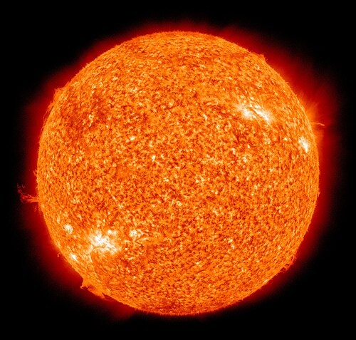

Soarele
Soarele este steaua din centrul Sistemului Solar. Este o sferă aproape perfectă din plasmă fierbinte,[16][17] ținută de gravitație și modelată de un câmp magnetic. Este de departe cea mai importantă sursă de energie pentru viața de pe Pământ. Diametrul său este de aproximativ 1,39 milioane de kilometri (sau este de 109 ori mai mare decât al Terrei), iar masa sa este de aproximativ 330 000 de ori mai mare decât a Terrei. Reprezintă aproximativ 99,86 % din masa totală a Sistemului Solar. Aproximativ trei sferturi din masa Soarelui este formată din hidrogen (≈73 %); restul este în mare parte heliu (≈25 %), cu cantități mult mai mici de elemente mai grele, inclusiv oxigen, carbon, neon și fier.